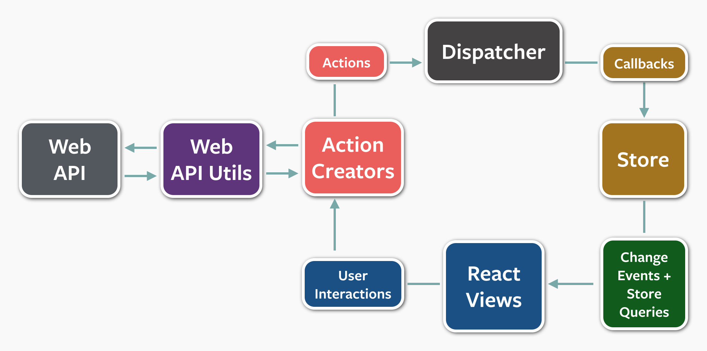

FLUX
Client-Side
Architecture
Motivations
Classical MVC

A Bit of History

Unseen Count
- Increment unseen thread count
- Append message in chat tab
function newMessageHandler(message) {
UnseenCount.incrementUnseen();
var chatTab = ChatTabs.getChatTab(message.threadID);
chatTab.appendMessage(message);
if(chatTab.hasFocus()) {
UnseenCount.decrementUnseen()
}
}
- Increment unseen thread count
- Append message in chat tab
- If open append message in main messages view
- If chat tab is focused or main messages view is open, decrement unseen count
function newMessageHandler(message) {
UnseenCount.incrementUnseen();
var chatTab = ChatTabs.getChatTab(message.threadID);
chatTab.appendMessage(message);
var messageView = Message.getOpenView();
var threadID = MessagesView.getThreadID();
if (threadID === message.threadID) {
messagesView.appendMessage(message);
}
if(chatTab.hasFocus() || threadID === message.threadID) {
UnseenCount.decrementUnseen()
}
}
Angular MVC
Angular Code

Scaling
FLUX
Unidirectional Data Flow

Plus Interactions

Scaling

Plus Server-Side
FLUXCase Study
SongFLUX for Angular
Code examples from Trkstr, a music player
Action Constructor
angular.module('trkstr.player.actions', [
'songFlux'
]).factory('PlayerActions', function(songFactory){
function PlayAction(track){
this.track = track;
this.purpose = 'Request a track be played.';
this.dispatcher = songFactory.getDispatcher('trkstr');
}
PlayAction.prototype.dispatch = function(){
this.dispatcher.dispatch(this);
};
return {
Play: PlayAction
};
});
Store (1/2)
PlayerFactory = function(Actions, song) {
function PlayerStore() {
global.EventEmitter.call(this);
this.dispatcher = song.getDispatcher('trkstr');
this.Events = PlayerStore.Events;
this.currentTrack = { title: "Nothing Playing..." };
this.doPlay = this.dispatcher.register(Actions.Play,
this.play.bind(this));
}
PlayerStore.prototype = Object.create(EventEmitter.prototype);
PlayerStore.prototype.play = function(playAction) {
this.currentTrack = playAction.track;
this.emit(PlayerStore.Events.TrackChanged);
};
Store (2/2)
...
PlayerStore.Events = {
TrackChanged: 'TrackChanged'
};
return new PlayerStore();
};
PlayerFactory.$inject = [ 'TrkstrActions', 'songFactory' ];
angular.module('trkstr.stores.player', [
'trkstr.actions', 'songFlux'
]).factory('PlayerStore', PlayerFactory);
Template
playing {{ state.track.title }}
ng-Controller (1/3)
function PlayerController(store) {
this.store = store;
this.store.on(
this.store.Events.TrackChanged,
this.play.bind(this));
this.play();
}
PlayerController.prototype.play = function() {
return this.track = this.store.currentTrack;
};
PlayerController.$inject = ['PlayerStore'];
ng-Controller (2/3)
function PlayerDirective() {
this.controller = PlayerController;
this.templateUrl = 'player';
this.replace = false;
this.restrict = 'E';
this.controllerAs = 'state';
this.bindToController = true;
this.scope = {};
}
ng-Controller
PlayerDirective.factory = function() {
return new PlayerDirective();
};
PlayerDirective.factory.$inject = [];
angular.module('trkstr.player.component', [
'trkstr.stores.player', 'player.template'
]).directive('player', PlayerDirective);
Calling Actions
Excerpt from music library component
function LibraryController(Library, Actions) {
this.Library = Library; // A library has albums, which have tracks
this.albums = Library.albums; // Updates on Library mutation events
this.Actions = Actions;
}
LibraryController.prototype.play = function(track) {
return this.Actions.Play(track).dispatch();
};
LibraryController.$inject = ['TrkstrLibrary', 'TrkstrActions'];
- {{ album.name }}
- {{ track.title }}